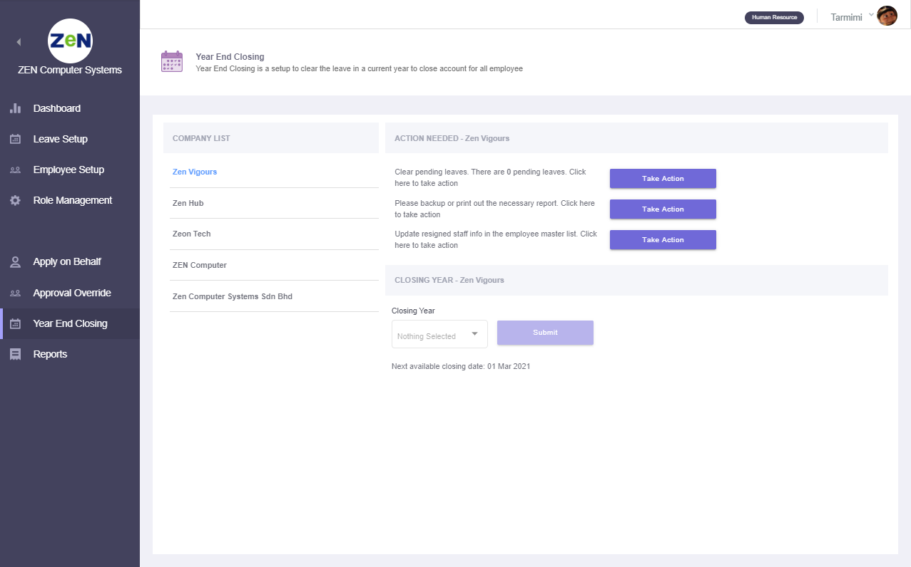

administration¶
admin dashboard¶
This page will show the details of latest announcement created by admin and upcoming holiday, birthday, new joiner & leaver. There will be a long leave reminder information too. Admin able to manage announcement by create, edit and delete features.

Create announcement
Click the Create New button to write new announcement.

Edit announcement
Click the edit icon of the selected announcement to do the changes.

Delete
Click the delete icon to remove unwanted announcement.
leave setup¶
calendar profile setup¶
Create specific public holiday and rest day for employee.

There have fews feature as listed here:
Create new calendar
Edit calendar profile name, rest day & public holiday
Delete calendar profile
Assign user by using drag & drop individual or bulk
Set as new default calendar profile
working hour profile setup¶
Create office working hour for employee

There have fews feature can be used after toggle Edit Mode to ON as listed here:
Create new working hour profile
Edit working hour profile name, working hour (full day, half day, quarter day)
Delete working hour profile
Assign user to desired profile by using drag & drop individual or bulk
Set as new default working hour profile
leave entitlement setup¶
Create & define master list for all type of leave

The default leave type & leave entitlement profile will be created after administration account signed up. Leave entitlement setup started after Edit Mode toggle button was turn ON.
Create new leave type & new leave entitlement profile
Click on the Create New button to create new leave type abbreviation & leave type name. Then, click the Create button to proceed for leave entitlement profile creation. Enter profile name & entitlement description and click Add button to complete creation process.
Add/edit/delete leave type & entitlement profile
Click on the pencil icon at the overview page to Edit Data or Clone Existing Data. In Edit Data tab, you’re able to edit leave type abbreviation & leave type name. Leave entitlement profile name & description can be edited and profile can be added or deleted. Click Save button to save all edited data.
Leave type configuration
Select the desired entitlement profile and configure the setting in the Leave Type Configuration tab.
Leave Entitlement level
Default level 1 is created automatically. You’re able to edit the service year data, entitled day & bring forward value. You can create new level for senior and delete unwanted level data.
- NOTE:
At least one leave entitlement level must be saved
Toggle Off Edit Mode
Lastly, toggle off the Edit Mode button at the top right to save all the leave type configuration & leave entitlement level data.


general leave policy¶
Manage tenant leave policy to ensure general information is created in application


role management¶
Create the user role and the configuration based on their access level


year end closing¶
Year End Closing is a setup to clear the leave in a current year to close account for all employee
reports¶
Produce reports for individual and group. Simply select report & leave types, then proceed with selected employees